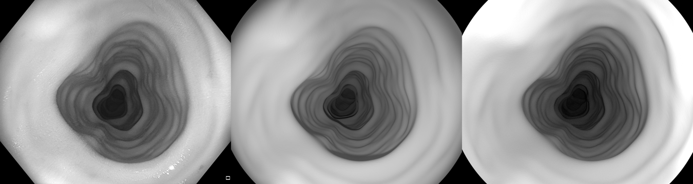
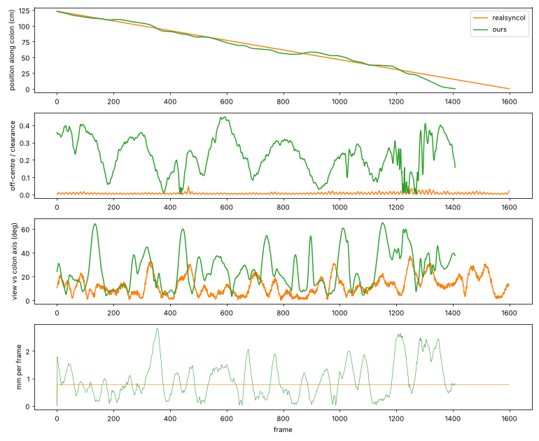
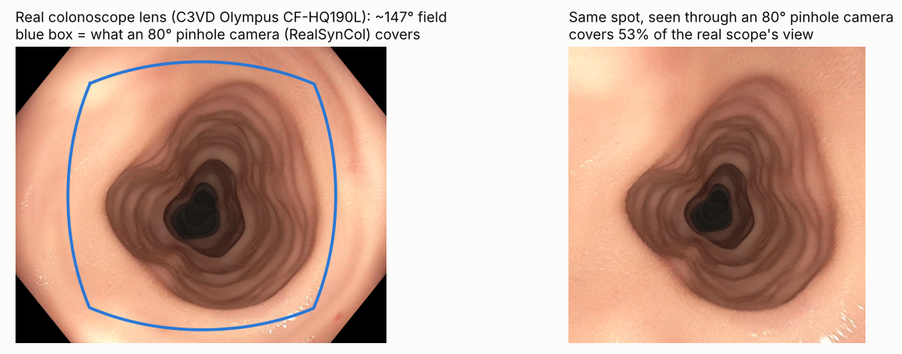
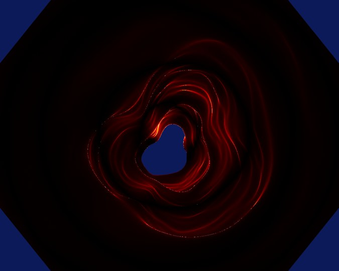
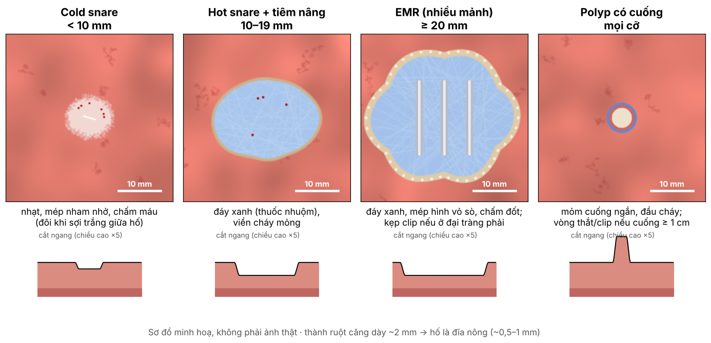
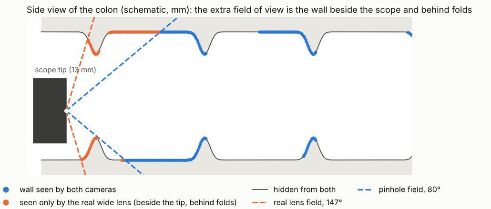

Nộp ở đâu · video giống thật · polyp và hố sau cắt · bác sĩ
Nguyễn Hải Toàn
Kính gửi: TS. Mai Thanh Thái & PGS.TS. Hoàng Văn Xiêm
Phần 1
Đã đăng bộ cùng loại: RealSynCol, C3VDv2 (2026), EndoMapper, REAL-Colon, HyperKvasir
| RealSynCol | Của mình | |
|---|---|---|
| Nguồn | giống nhau: CT ACRIN → 3D Slicer → Blender | |
| Số ruột | 10 | 20–30 kiểm kỹ (tới 103 nếu đủ người) |
| Camera | lỗ kim 80°, tự đặt | khớp ống soi thật (0,004 mm) |
| Đèn | tự đặt | đo từ video ống soi thật |
| Tổn thương | không có | polyp đúng vị trí ACRIN · trước/sau cắt |
| Nhãn độ phủ | không có | có |
| Bác sĩ chấm độ thật | không có | có (kế hoạch) |
Cùng cách làm — mình khác ở những phần khó
Phần 2
| Thành phần | Làm thế nào | Trạng thái |
|---|---|---|
| Camera | khớp ống kính Olympus của C3VD | ✓ kiểm trong Blender |
| Đèn | đo từ 256 khung video ống soi thật | ✓ kiểm trong Blender |
| Chuyển động | khớp số đo khi bác sĩ cầm ống soi | ✓ số liệu · chưa render |
| Màu niêm mạc | tách mạch máu tự động từ REAL-Colon (thay ảnh C3VD) | … đang làm |
Ba phần đầu đo từ dữ liệu thật, không chỉnh bằng mắt

trái: video thật C3VD · giữa: đèn đo được · phải: đèn cũ (chỉ so độ sáng)

| Cách di chuyển | mm / khung trung vị (IQR) |
|---|---|
| Bác sĩ cầm ống soi thậtsố đo của RealSynCol | 0,81 (1,30) |
| Cũ: đi đều theo đường tâm | 2,00 (0,00) |
| Cách của RealSynCol | 0,77 (0,00) |
| Của mìnhrút ống, lệch tâm, nhìn quanh, dừng soi thành | 0,81 (0,89) |


| Cách đọc | Sai số độ sâu trung vị |
|---|---|
| Của mình | 0,004 mm |
| Lật ảnh trên–dưới | 3,8 mm |
| Lật ảnh trái–phải | 3,1 mm |
| Hiểu sai kiểu độ sâu | 4,7 mm |
Đặt mesh và pose thật của C3VD vào Blender, render độ sâu, so từng pixel với độ sâu C3VD công bố (khung 15 và 45, không dùng khi khớp).
Cách sai phải sai rõ — nếu không thì phép thử vô nghĩa.
Phần 3
Từ CT: có cuống · nhô · hơi nhô
(polyp phẳng hẳn: CT không thấy → bỏ)
Theo ACRIN (đo khi nội soi) — CT chỉ để kiểm đúng polyp
Đoạn đại tràng ACRIN ghi → bác sĩ X-quang xác nhận trên CT
Không chia theo loại mô (tăng sản, u tuyến…) — CT không thấy được · ghi là giới hạn trong bài
| Polyp | Bác sĩ cắt bằng | Hố để lại |
|---|---|---|
| < 10 mm | thòng lọng lạnh, rìa 1–2 mm mô lành | nhỏ, tròn, nhạt · nông ~0,5 mm |
| 10–19 mm | thòng lọng nóng (± tiêm nâng) | bầu dục, đáy xanh nếu tiêm, viền cháy · ~1 mm |
| ≥ 20 mm | EMR, thường cắt nhiều mảnh, đốt mép | lớn, mép vỏ sò · clip nếu ở đại tràng phải |
| Có cuống | thòng lọng nóng ngang cuống | mỏm cuống ngắn · vòng thắt/clip nếu cuống ≥ 1 cm |
Theo hướng dẫn châu Âu ESGE 2024 (Ferlitsch và cs., Endoscopy 2024;56:516–545). Rìa ngoài 1–2 mm và độ sâu là mình chọn — bác sĩ chỉnh.

Kích thước + hình dạng → tự chọn kiểu hố · lưu hình học chính xác làm đáp án
Phần 4
Không nói "thật như video thật" — nói "gần thật hơn RealSynCol, và dùng được"
Có giống polyp thật không? Ước lượng kích thước (mm) → so với kích thước thật ACRIN.
Có giống vị trí vừa cắt polyp không? Cắt hết hay còn sót?
Đây có phải túi thừa không? (song song: bác sĩ X-quang đọc trên CT)
Chỉ dữ liệu của mình có đáp án kích thước thật → đo được bác sĩ ước lượng sai bao nhiêu mm · lặp lại ~10 % clip để đo độ nhất quán
Nguyễn Hải Toàn
| Bộ dữ liệu | Túi thừa | Loại |
|---|---|---|
| GastroVision (2023) | 6 ảnh | ảnh 2D |
| ERS (Gdańsk) | 135 + 325 ảnh | ảnh 2D, một phần có viền |
| Các bộ có 3D (C3VD, RealSynCol, SimCol3D, …) | không có | — |
| Của mình | có (chờ bác sĩ) | 3D + video, cùng nhãn trên CT |
Nói được: "chưa bộ nội soi nào có 3D gắn nhãn túi thừa" — không nói "chưa bộ nào có". Túi thừa là phần thêm, không phải đóng góp chính.

Phần chỉ ống kính rộng thấy (cam) là vùng mù — đúng chỗ polyp bị bỏ sót.
Cả hai camera đã làm xong · đề xuất phát hành cả hai